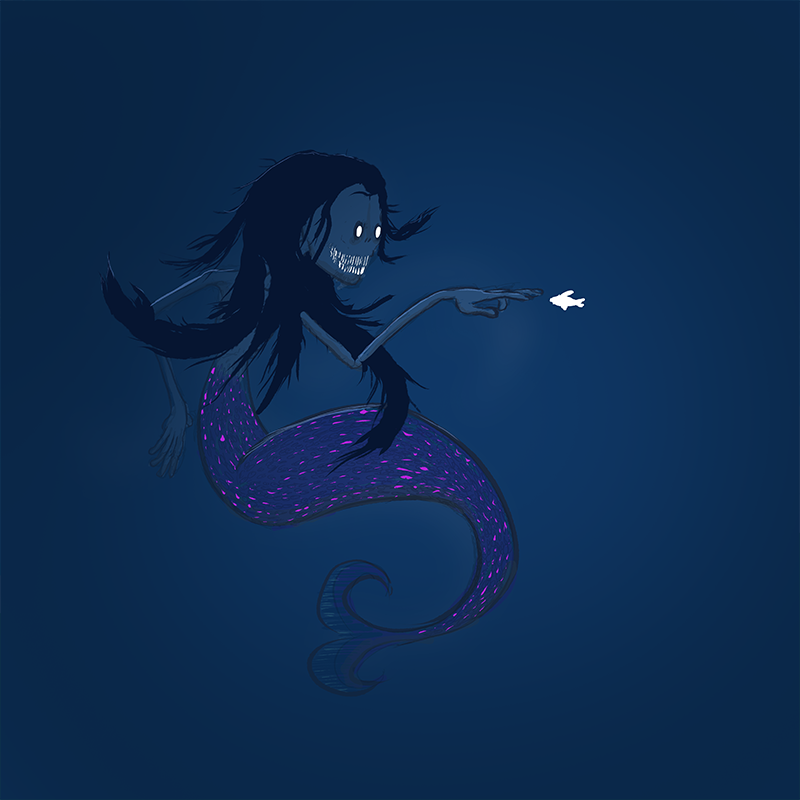
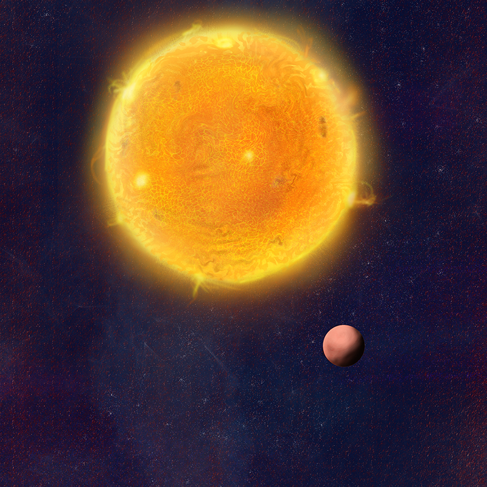
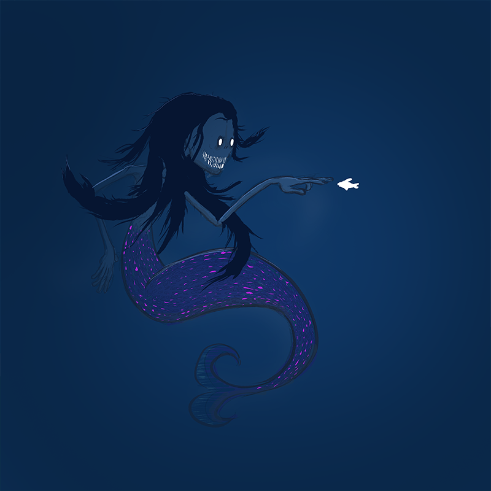
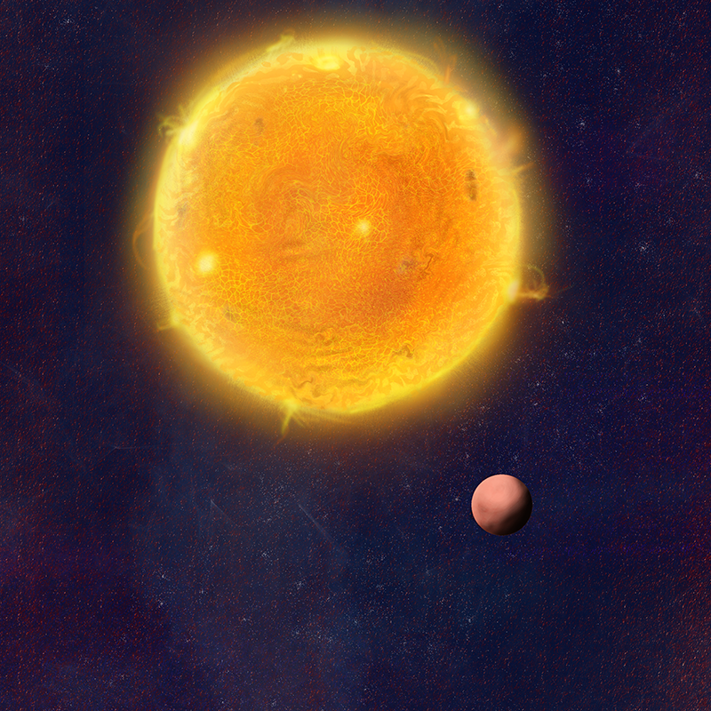
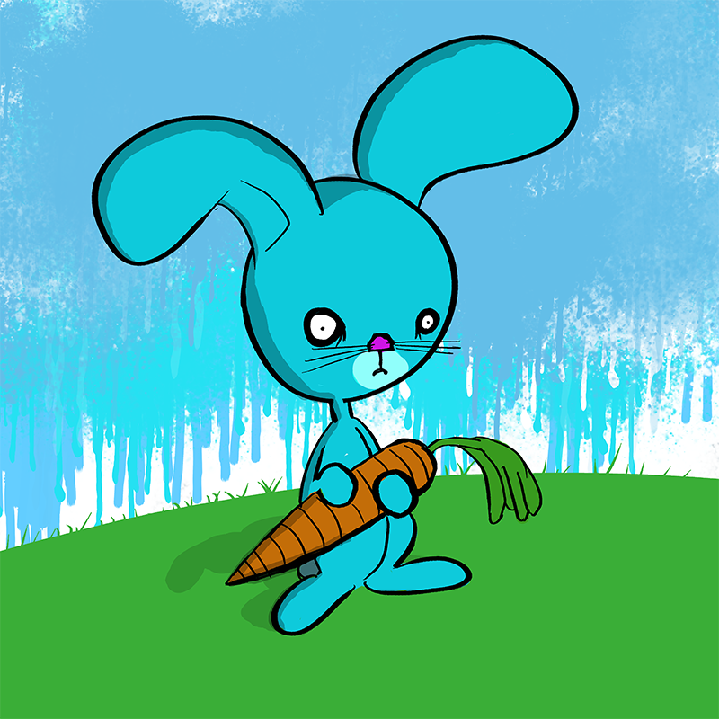
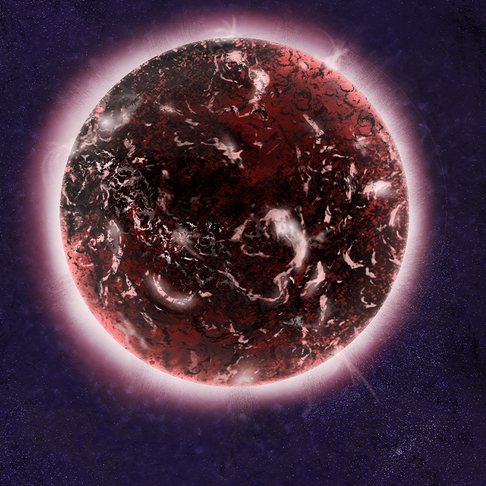
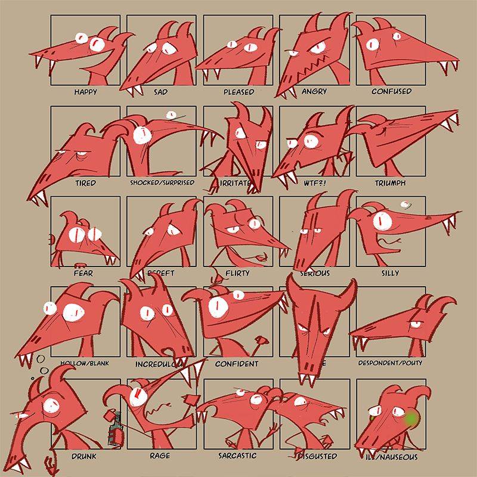
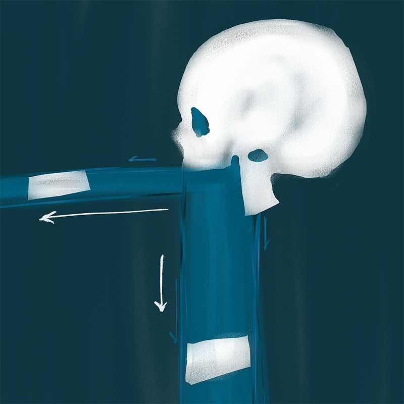
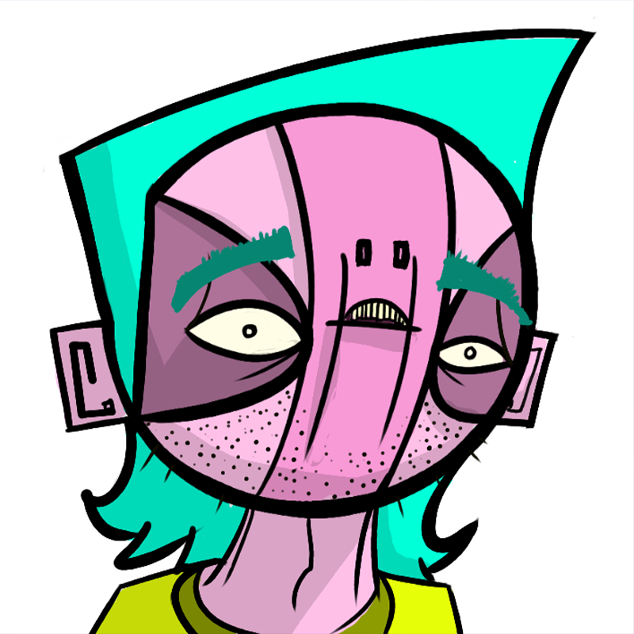

All the scrawling...
I’ve created illustrations throughout my life with inspiration drawn from illustrators like Quentin Blake and Ralph Steadman (gotta love that messy ink)... and of course saturday morning cartoons! These days you can catch most of my work on Instagram. Currently my practice is largely digital based. Here’s a choice few… pop along to one of my socials for more!
 









